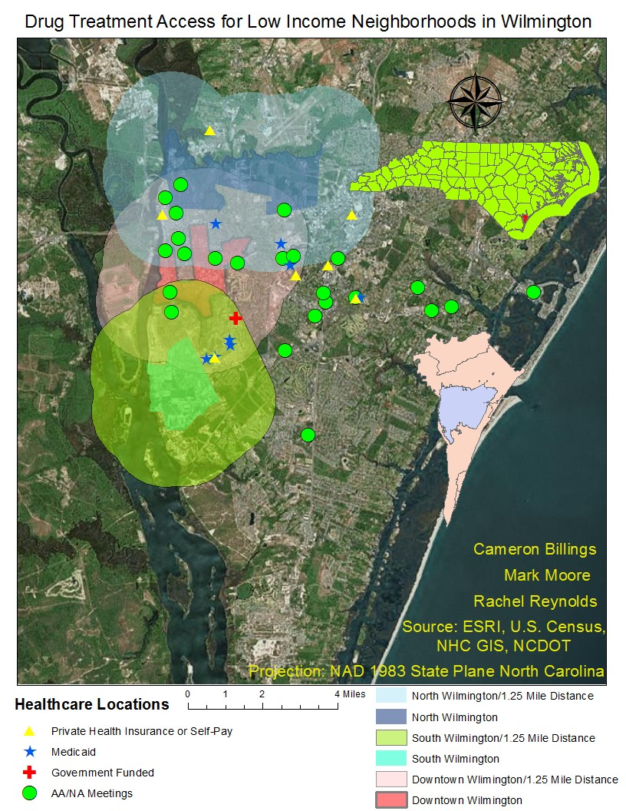
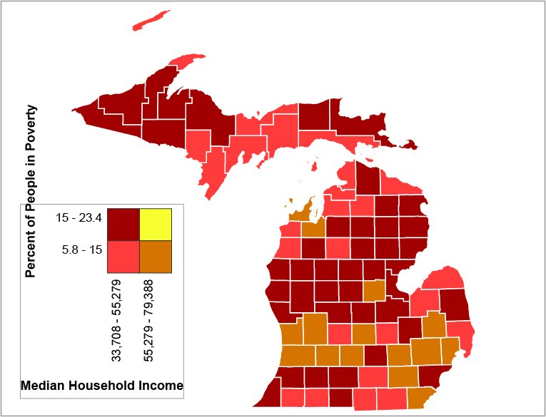

Cameron Billings
Geography Major / GIS Student
Hello there. I am a Geography Major currently enrolled in the GIS program at the University of Wisconsin Madison's Graduate School. Ever since I was a child, I have always been been insterested in maps and always explore those places. I am hoping to use my knowledge of maps in urban planning.
Take a look at my Resume for more information.
Portfolio
{kind=link}
In 2017, for the final project of a Introduction to GIS class, I had to map a phenomenon with a group of students. We chose to map access to drug treatment centers for low income neighborhooods. Using ArcGIS, we mapped out several different drug treatment centers and calculated a 1.25 mile radius around the low income neighborhoods to see if the treatments centers are within a walking distance of the neighborhoods.
{kind=link}
One of my GIS assignments in Graduate School was make a bivariate map that was to be added to a longform infographic. This map showing the relationship between median household income and the percent of people in poverty in Michigan counties was made using Indiemapper.

Another GIS assignment was to plan a bike route using a shaded relief. The shaded relief was made using ArcGIS while Adobe Photoshop and Illustrator were used to edit raster colors and vector data.

My final project for Graduate School. The map and chart were made with Javascript using Data Driven Documents (D3).